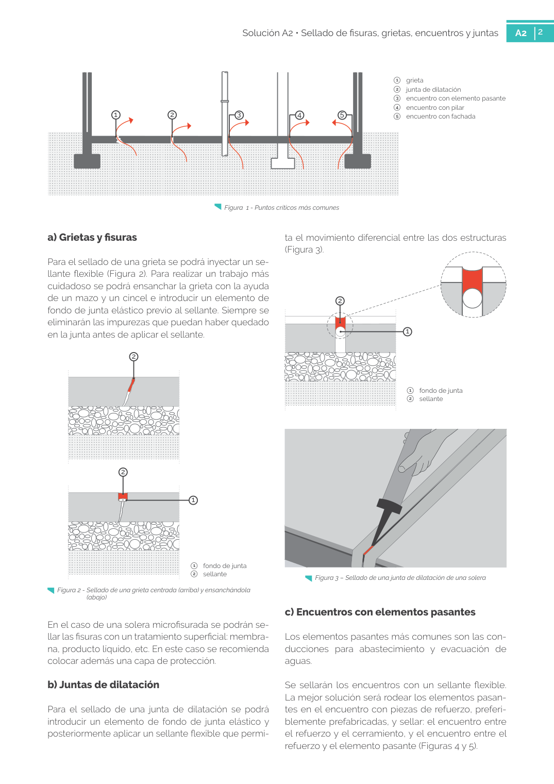

GUIA · b) Juntas de dilatación · versión sin-fecha · capa guia
Formatos: JSON compacto · Markdown · PDF fuente
Ámbito del documento · texto del ámbito · documento y tablas
Tipo: tablas, figuras · nivel 3 · sección estimada: 1 fondo de junta 2 sellante · padre: a0109
b) Juntas de dilatación Para el sellado de una junta de dilatación se podrá introducir un elemento de fondo de junta elástico y posteriormente aplicar un sellante flexible que permi ta el movimiento diferencial entre las dos estructuras (Figura 3). 1 fondo de junta 2 sellante 2 sellante 1 2 Figura 3 – Sellado de una junta de dilatación de una solera

PDF fuente redistribuible: copia fiel enlazada en esta página (SHA256 verificado).